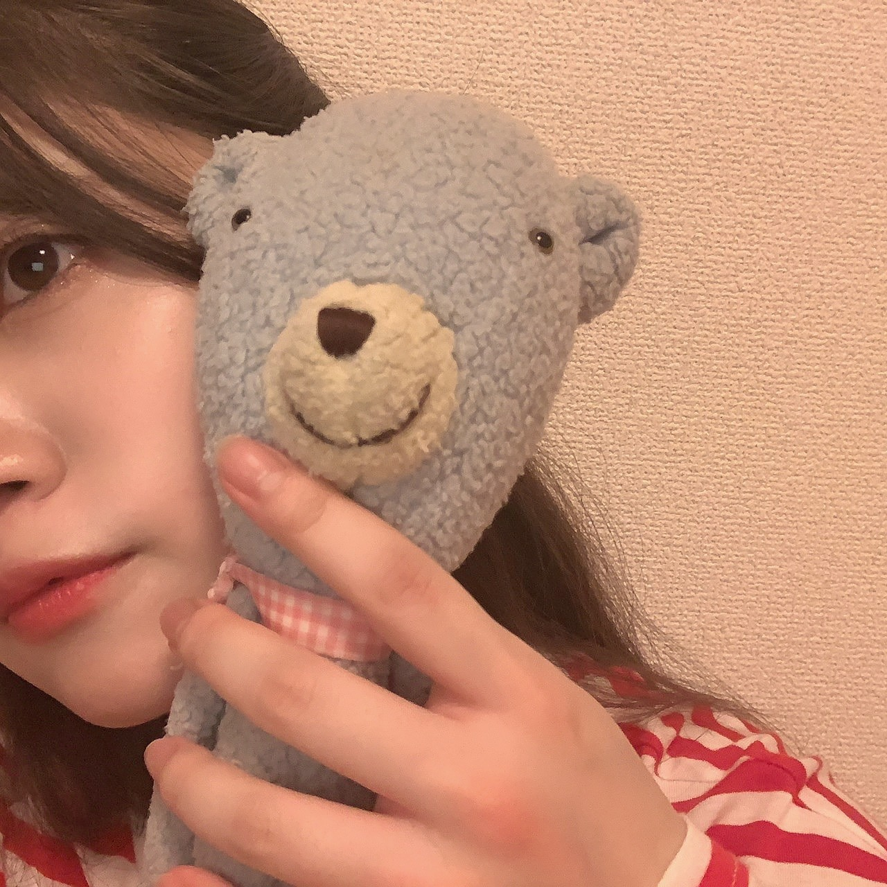
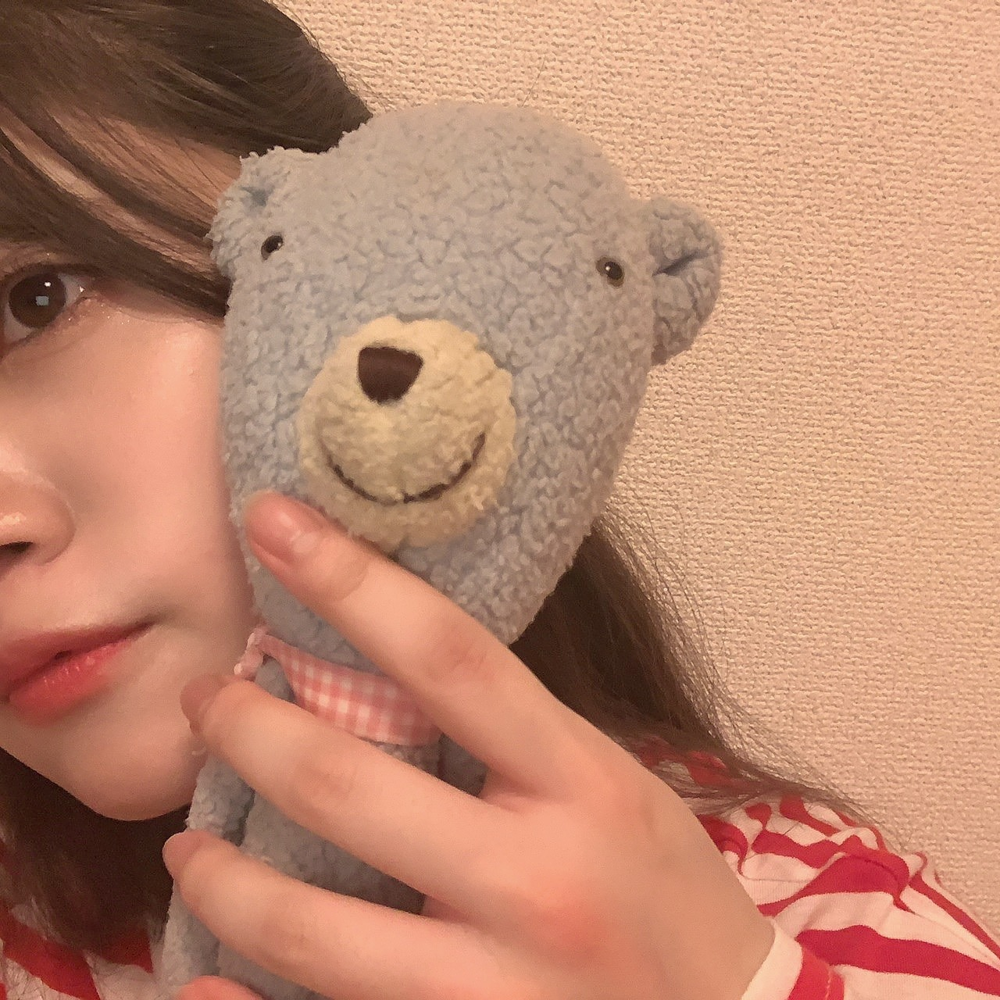

2020/0720MonYes
小さな頃から夜更しな私は
タモリ倶楽部のおしりふりふりが大好きでした。
よく踊ってました。
空耳アワードは、家族で大笑いの企画です。
あれ思いつく方の耳って凄いなーって感心してしまいます。
それと、あの映像作りが絶妙なセンスで
より、面白いんですよね！！！
大人になっても続いている番組
続いてることの素晴らしさ
とても素敵ですよね。☺️
最近は、ネットで海外の景色を調べて行った気分になるのがマイブームかもです。
楽しいですー。
行けるようになったら
ここでこんな写真撮りたいなーとか
こんな事したいなーとか想像が膨らみます！！
ネットで海外について調べてたり見ていたら
海外のファンの人にも会いたいなーと思いました。
ただでさえ会える機会が少なかった中。
早く、世界中どこでも行けるようになるといいな。
でも、この時代に逢えてよかったと思う事もありました！！！
インターネットがある時代だからこそいつも
近くに感じられますし
だからこそ、見つけてもらえたから
こんな時だからこそ
乃木坂46もネットを使って活動をしていて
日本に住むファンの皆さんとも今は
握手会やライブ直接会う機会は暫くない中ですが
こうやって、このブログでも
色んな地域からコメントがあって、、、
幸せ者だと感じました。☺️
いつも、あたたかいコメントありがとうございます。☺️
写真は46時間TVの時に連れて行っていた
ひょろひょろくんとのツーショット。
毎日一緒に寝ています。
同い年です。




また、更新しますね！！
タモリ倶楽部のおしりふりふりが大好きでした。
よく踊ってました。
空耳アワードは、家族で大笑いの企画です。
あれ思いつく方の耳って凄いなーって感心してしまいます。
それと、あの映像作りが絶妙なセンスで
より、面白いんですよね！！！
大人になっても続いている番組
続いてることの素晴らしさ
とても素敵ですよね。☺️
最近は、ネットで海外の景色を調べて行った気分になるのがマイブームかもです。
楽しいですー。
行けるようになったら
ここでこんな写真撮りたいなーとか
こんな事したいなーとか想像が膨らみます！！
ネットで海外について調べてたり見ていたら
海外のファンの人にも会いたいなーと思いました。
ただでさえ会える機会が少なかった中。
早く、世界中どこでも行けるようになるといいな。
でも、この時代に逢えてよかったと思う事もありました！！！
インターネットがある時代だからこそいつも
近くに感じられますし
だからこそ、見つけてもらえたから
こんな時だからこそ
乃木坂46もネットを使って活動をしていて
日本に住むファンの皆さんとも今は
握手会やライブ直接会う機会は暫くない中ですが
こうやって、このブログでも
色んな地域からコメントがあって、、、
幸せ者だと感じました。☺️
いつも、あたたかいコメントありがとうございます。☺️
写真は46時間TVの時に連れて行っていた
ひょろひょろくんとのツーショット。
毎日一緒に寝ています。
同い年です。

また、更新しますね！！
2020/07/20 18:42
コメント(534)
ひょろひょろくんは毎日一緒に寝ている事が羨ましいな〜
海外に行った事が無いからおすすめとか行ってみたい所はどこですか？
こんな時代に生まれて良かったと思えるように生きて行こう〜と
また会える日を楽しみに生きていきまーす。
また会おう〜ね

海外に行った事が無いからおすすめとか行ってみたい所はどこですか？
こんな時代に生まれて良かったと思えるように生きて行こう〜と
また会える日を楽しみに生きていきまーす。
また会おう〜ね
お疲れ様です。
空耳アワーは私も大好きです。クスッと笑えるのが癖になりますね☺️
私はあまり遠出をしない人間でしたが乃木坂ちゃんのファンになってからライブを追っかけて札幌から福岡、海外にも行くことが出来ました笑
次に蘭世ちゃんと会える時がとても待ち遠しいです！
大好きです。またね:-)
空耳アワーは私も大好きです。クスッと笑えるのが癖になりますね☺️
私はあまり遠出をしない人間でしたが乃木坂ちゃんのファンになってからライブを追っかけて札幌から福岡、海外にも行くことが出来ました笑
次に蘭世ちゃんと会える時がとても待ち遠しいです！
大好きです。またね:-)
蘭世！ ブログ更新ありがとう！！
蘭世が踊ってる、タモリ倶楽部のおしりふりふりどこかでまた見たいなぁ笑笑
自分も蘭世のブログを見てすごく元気もらってます！！こちらこそ本当にありがとうございます！
ただ、便利なインターネットの裏には危険や嫌なことも沢山あるから怖いよねぇ。 蘭世も何かあっても無理しないで休み休みしながらこれからもがんばってね！！ たくさんたくさん応援してます！！
蘭世が踊ってる、タモリ倶楽部のおしりふりふりどこかでまた見たいなぁ笑笑
自分も蘭世のブログを見てすごく元気もらってます！！こちらこそ本当にありがとうございます！
ただ、便利なインターネットの裏には危険や嫌なことも沢山あるから怖いよねぇ。 蘭世も何かあっても無理しないで休み休みしながらこれからもがんばってね！！ たくさんたくさん応援してます！！
ブログ更新ありがとうございます。
日本のことが大好きであまり海外のことを調べたり海外の音楽を聴いたりすることがあまりないんです。ダメですね色々な文化に触れ合っていかなければ
乃木坂もネットを使った色々な配信や動画配信やらでこういう時期でも乃木坂に触れ合うことが出来るのは嬉しいです。先日の音楽の日で久しぶりに乃木坂をLIVEで見て感動しました。動いている乃木坂っていいですね
日本のことが大好きであまり海外のことを調べたり海外の音楽を聴いたりすることがあまりないんです。ダメですね色々な文化に触れ合っていかなければ
乃木坂もネットを使った色々な配信や動画配信やらでこういう時期でも乃木坂に触れ合うことが出来るのは嬉しいです。先日の音楽の日で久しぶりに乃木坂をLIVEで見て感動しました。動いている乃木坂っていいですね
蘭世ブログ更新ありがとうー！
継続することって案外難しいよね。
そう考えると日々の生活を単にこなすことも大事なことだなぁと思いました！ネットってほんと便利よね。でもやはり、写真でなくて、自分の目で見たり、SNSでのコミュニケーションじゃなくて、対面で会話することを今はできないからこそ大事だなと感じます。
はやく蘭世に握手会で会いたいよー！
継続することって案外難しいよね。
そう考えると日々の生活を単にこなすことも大事なことだなぁと思いました！ネットってほんと便利よね。でもやはり、写真でなくて、自分の目で見たり、SNSでのコミュニケーションじゃなくて、対面で会話することを今はできないからこそ大事だなと感じます。
はやく蘭世に握手会で会いたいよー！
蘭世さんブログ更新ありがとうございます！
僕は小さい頃は早く寝かしつけられてたので、夜更かしは今でも苦手です…
夜更かししても、次の日がすごい辛いので、早く寝るようにしてます。だから、ショートスリーパーにはすごい憧れますねw
1年前には初めて蘭世さんに会えて、すごく喜んでいたのに、1年後にこんなに会えてないなんて思いもしませんでしたね…
そして、蘭世さんとは半年くらいしか会ってないってことに気づいて驚きましたねw
去年はそれだけ濃い1年で、蘭世さんからすごく力を貰った気がしてます。
直接は会えなくても、ブログやモバメ、テレビなどて蘭世さんからちゃんと力を貰えていますよ！
これからも末永くよろしくお願いします。。。
僕は小さい頃は早く寝かしつけられてたので、夜更かしは今でも苦手です…
夜更かししても、次の日がすごい辛いので、早く寝るようにしてます。だから、ショートスリーパーにはすごい憧れますねw
1年前には初めて蘭世さんに会えて、すごく喜んでいたのに、1年後にこんなに会えてないなんて思いもしませんでしたね…
そして、蘭世さんとは半年くらいしか会ってないってことに気づいて驚きましたねw
去年はそれだけ濃い1年で、蘭世さんからすごく力を貰った気がしてます。
直接は会えなくても、ブログやモバメ、テレビなどて蘭世さんからちゃんと力を貰えていますよ！
これからも末永くよろしくお願いします。。。
蘭世ブログ更新ありがとう！
有言実行でめっちゃブログ更新してくれるの嬉しいよ〜
今できないことがあるからこそ今しかできないことやるのって大事よね！
早くライブで蘭世見つけて騒ぎたいし握手会で蘭世に色々喋りに行きたいです。
今まで通りは難しいと思うけどまた前みたいなことができると嬉しいなと思います！
拙い文でごめんね笑
また次のブログもモバメも楽しみにしてるよ！
ばいばい！
有言実行でめっちゃブログ更新してくれるの嬉しいよ〜
今できないことがあるからこそ今しかできないことやるのって大事よね！
早くライブで蘭世見つけて騒ぎたいし握手会で蘭世に色々喋りに行きたいです。
今まで通りは難しいと思うけどまた前みたいなことができると嬉しいなと思います！
拙い文でごめんね笑
また次のブログもモバメも楽しみにしてるよ！
ばいばい！
タモリ倶楽部いいよね〜
空耳アワー
絢音ちゃんと与田っちょがで出たから出られたらいいね
空耳アワー
絢音ちゃんと与田っちょがで出たから出られたらいいね
蘭世さん、ブログ更新ありがとう！
ひょろひょろ君になりたい。。。
赤のストライプ、お似合いです。
よきよき(^^)
喜章
(よしあき)
ひょろひょろ君になりたい。。。
赤のストライプ、お似合いです。
よきよき(^^)
喜章
(よしあき)
ブログ更新ありがとう！
凄く個人的な事やけど、誕生日の今日に蘭世がブログ更新してくれてめっちゃ嬉しい☺︎
こんな小さなことでも喜べる自分は、今恵まれた幸せな環境におるんやなって実感しました！
改めてこんな風に思えるきっかけをくれてありがとう。
こんな状況でもブログ、モバメとかで蘭世との繋がりを感じられるから、自分も頑張ろうって思える！
いつもありがとう☺︎
凄く個人的な事やけど、誕生日の今日に蘭世がブログ更新してくれてめっちゃ嬉しい☺︎
こんな小さなことでも喜べる自分は、今恵まれた幸せな環境におるんやなって実感しました！
改めてこんな風に思えるきっかけをくれてありがとう。
こんな状況でもブログ、モバメとかで蘭世との繋がりを感じられるから、自分も頑張ろうって思える！
いつもありがとう☺︎
タモリ倶楽部いいよね〜
空耳アワー
絢音ちゃんと与田っちょがで出たから出られたらいいね
空耳アワー
絢音ちゃんと与田っちょがで出たから出られたらいいね
可愛すぎてやばい！
僕にとっては蘭世が楽しんで頑張っていることが最大のモチベーションだし、幸せだからあまり不安になったり思い詰めたりしないでね。
蘭世がやりたいことを全力でやっていればそれを応援したいし、そんな蘭世の素晴らしさを沢山の人に知ってもらうために頑張るね！
蘭世がやりたいことを全力でやっていればそれを応援したいし、そんな蘭世の素晴らしさを沢山の人に知ってもらうために頑張るね！
か、かわいすぎる
ブログ更新ありがとうございます！！
タモリ倶楽部、聞いた事ある程度なんですが、長寿番組なんですね
今度機会があったら見てみます～
どこにも行けないですからね、そーいう楽しみ方もいいですね！海外のファンの方も増えているので、早く海外でライブとかできるようになればさらに蘭世さんの良さが色んな人に伝わると思うので、収まって欲しいですね
簡単にとは行かないかもしれないけど、自分の言葉がコメントとして蘭世さんに伝わってるのかと思うとこの時代に生きててよかったなーと思います
蘭世さんが色んな人に好かれている証拠ですね！
こちらこそいつもこまめなブログやモバメ、ありがとうございます！！
ひょろひょろくん！
定期的に上げてくれて無事を確認できるのでこちらも嬉しいです
またメディアに出る機会があるといいですね！！
モバメの返信とかはまたコメント書きますね！
今回の1曲、8曲目！
ナナヲアカリさんで「ダメレオンハート」！
この曲は学校で自分の個性を出すのが嫌だった女の子が、ふとクラスの人気者の男子に趣味がバレてしまったけど、それをいいじゃん！って言って貰えた子が変わっていくストーリー性のある曲です！
盛り上がれますし、内容もいいので、ぜひYouTubeで映像付きで見て欲しいです！！
東京はまた大変だと思いますが、体調には気をつけて頑張ってください！！
黒T
タモリ倶楽部、聞いた事ある程度なんですが、長寿番組なんですね
今度機会があったら見てみます～
どこにも行けないですからね、そーいう楽しみ方もいいですね！海外のファンの方も増えているので、早く海外でライブとかできるようになればさらに蘭世さんの良さが色んな人に伝わると思うので、収まって欲しいですね
簡単にとは行かないかもしれないけど、自分の言葉がコメントとして蘭世さんに伝わってるのかと思うとこの時代に生きててよかったなーと思います
蘭世さんが色んな人に好かれている証拠ですね！
こちらこそいつもこまめなブログやモバメ、ありがとうございます！！
ひょろひょろくん！
定期的に上げてくれて無事を確認できるのでこちらも嬉しいです
またメディアに出る機会があるといいですね！！
モバメの返信とかはまたコメント書きますね！
今回の1曲、8曲目！
ナナヲアカリさんで「ダメレオンハート」！
この曲は学校で自分の個性を出すのが嫌だった女の子が、ふとクラスの人気者の男子に趣味がバレてしまったけど、それをいいじゃん！って言って貰えた子が変わっていくストーリー性のある曲です！
盛り上がれますし、内容もいいので、ぜひYouTubeで映像付きで見て欲しいです！！
東京はまた大変だと思いますが、体調には気をつけて頑張ってください！！
黒T
ブログ更新ありがとうございます！
空耳アワード、自分も小さい頃笑いながらみていました！
こんな状況の中、蘭世さんがブログを更新して交流の場を与えてくれるのが嬉しいです！
ひょろひょろくんとのツーショットかわいいです！
空耳アワード、自分も小さい頃笑いながらみていました！
こんな状況の中、蘭世さんがブログを更新して交流の場を与えてくれるのが嬉しいです！
ひょろひょろくんとのツーショットかわいいです！
蘭世〜
昨日で夏休みも終わり今日からまたお仕事始まったけどなんとか月曜日終えてきたよ〜。 久々の出勤だったから疲れた疲れた〜(^◇^;)
まあ、あと2日行けばまた4連休だから頑張っていきますよ！
うー、蘭世に会いたくて仕方ないよ(*ﾉｪﾉ)
イベントがまた再開することを祈って…また、会えるよね。
その為にも変わらず俺頑張っていくからさ！！
蘭世も健康にはお気をつけてがんばんビーでね！！！
トルコのイスタンブールで写真集撮ってほしい！
ヨーロッパとアジアの混じった街並みが作る掴みどころのない妖艶な雰囲気が蘭世に合いそう！！
ヨーロッパとアジアの混じった街並みが作る掴みどころのない妖艶な雰囲気が蘭世に合いそう！！
東北から
(^o^)
いつもありがとう
これからも応援!!!
(^o^)
いつもありがとう
これからも応援!!!
ブログ更新ありがとう(*^^*)
やっぱりネットの世界って凄いよね！会ってないのにその人へ想いを伝えれるから助かるね！でも、やっぱり想いを伝えるのって直接会って伝えた方がもっとその人に伝わるよね！だから、蘭世に伝えたい事や話したい事がたくさんあります！今はコロナの時期で握手会やライブというイベントが無いけど、もし再開されて握手会で会った時はお互いにたくさん話して一緒に楽しもうな！
名古屋の握手会に早く行きたいな〜(´TωT｀)
蘭世は頑張り屋さんだから体調には気を付けてね！
また会える日までお互いに頑張ろう！
いつもモバメやブログでたくさん元気を貰ってます！
蘭世ありがとう(*^^*)
そして
愛してるよ(*^^*)
やっぱりネットの世界って凄いよね！会ってないのにその人へ想いを伝えれるから助かるね！でも、やっぱり想いを伝えるのって直接会って伝えた方がもっとその人に伝わるよね！だから、蘭世に伝えたい事や話したい事がたくさんあります！今はコロナの時期で握手会やライブというイベントが無いけど、もし再開されて握手会で会った時はお互いにたくさん話して一緒に楽しもうな！
名古屋の握手会に早く行きたいな〜(´TωT｀)
蘭世は頑張り屋さんだから体調には気を付けてね！
また会える日までお互いに頑張ろう！
いつもモバメやブログでたくさん元気を貰ってます！
蘭世ありがとう(*^^*)
そして
愛してるよ(*^^*)
蘭世ブログ更新ありがとう！
タモリ倶楽部たまに見るけど良いよね〜〜
空耳アワーのあの絶妙な映像ね！！笑笑
確かに「絶妙」だよね笑笑
空耳もよくそこ思いつくよなぁってのも多いよね
今度またみてみるね！
海外ね！！本当に行きたいよね！！
大学4年生になったら時間できるから色々海外回りたいなあって思っていたけれど、今はそんな状況じゃなくなっちゃったからね
僕はyoutubeとかで海外旅の映像見たりとか、海外の人が現地のご飯を食べている様子などを見て海外旅行気分になっているかなあ
また海外行ける日が早く来てほしいね！！
離れてはいるけれど、
心はいつも一緒だよ！！
ひょろひょろ君だ！！
体調には気を付けてね
人として大好きです
タモリ倶楽部たまに見るけど良いよね〜〜
空耳アワーのあの絶妙な映像ね！！笑笑
確かに「絶妙」だよね笑笑
空耳もよくそこ思いつくよなぁってのも多いよね
今度またみてみるね！
海外ね！！本当に行きたいよね！！
大学4年生になったら時間できるから色々海外回りたいなあって思っていたけれど、今はそんな状況じゃなくなっちゃったからね
僕はyoutubeとかで海外旅の映像見たりとか、海外の人が現地のご飯を食べている様子などを見て海外旅行気分になっているかなあ
また海外行ける日が早く来てほしいね！！
離れてはいるけれど、
心はいつも一緒だよ！！
ひょろひょろ君だ！！
体調には気を付けてね
人として大好きです
メールありがとう☺︎
タモリ倶楽部みたことないなあ。
今でこそ夜更かししちゃいますが、小さい頃は早寝でした。
でも気になったから見てみたい！
私もよくSNSで海外を調べてる！
最近は特に韓国かな。
夏に友達と行きたいねって話してたけど行けなくなっちゃったから、気分で韓国旅行を味わってます、、、笑
お洒落なカフェ、美味しいご飯、可愛いお洋服、豊富なコスメ。
1回しか行ったことないけど、何回も行きたいって思っちゃう国です！
蘭世ちゃんはどこの国を調べてるの〜？？
この時代だからこそ出会えた人がいると思うと素敵ですよね☺️
SNSやネットをうまく使って魅力が広がればなって思う！
早く会いたいけど、こうして繋がれてる気がするから安心です☺️
会える日までお互い頑張ろうね！！
ひょろひょろくんの登場率、、！！！
ボーダーのお洋服似合ってて可愛いです♡
タモリ倶楽部みたことないなあ。
今でこそ夜更かししちゃいますが、小さい頃は早寝でした。
でも気になったから見てみたい！
私もよくSNSで海外を調べてる！
最近は特に韓国かな。
夏に友達と行きたいねって話してたけど行けなくなっちゃったから、気分で韓国旅行を味わってます、、、笑
お洒落なカフェ、美味しいご飯、可愛いお洋服、豊富なコスメ。
1回しか行ったことないけど、何回も行きたいって思っちゃう国です！
蘭世ちゃんはどこの国を調べてるの〜？？
この時代だからこそ出会えた人がいると思うと素敵ですよね☺️
SNSやネットをうまく使って魅力が広がればなって思う！
早く会いたいけど、こうして繋がれてる気がするから安心です☺️
会える日までお互い頑張ろうね！！
ひょろひょろくんの登場率、、！！！
ボーダーのお洋服似合ってて可愛いです♡
蘭世かわいい！
蘭世、こんばんは
反乱軍のスパイとしてファーストオーダーに
追われながら、応援している
まさとです
ひょろひょろ君がうらやましいです
いつも蘭世と一緒で
なかなか天気が良くならないですね
コロナの影響も減らないし
出かける予定がダメになってます
本当にこのところ出かけられないので
自慢のカメラで写真もなかなか取れなくて
本当に残念です
ではまたね、本当にモバメありがとう
バイバイ
反乱軍のスパイとしてファーストオーダーに
追われながら、応援している
まさとです
ひょろひょろ君がうらやましいです
いつも蘭世と一緒で
なかなか天気が良くならないですね
コロナの影響も減らないし
出かける予定がダメになってます
本当にこのところ出かけられないので
自慢のカメラで写真もなかなか取れなくて
本当に残念です
ではまたね、本当にモバメありがとう
バイバイ
会えない日が続きますが、ブログやモバメで近況を知らせてくれてありがとう。
去年の今日は福岡でライブだったんだよね。
今年も福岡行こうと思ってたんだけど。
ちなみに空耳アワーだけど変換ミス？
去年の今日は福岡でライブだったんだよね。
今年も福岡行こうと思ってたんだけど。
ちなみに空耳アワーだけど変換ミス？
らんぜーーーー
ブログ更新ありがとう！
好き
ブログ更新ありがとう！
好き
ブログ更新ありがとう！
自分もアメリカに行ってみたいんですよね
自由なイメージがあって自然も綺麗で、自分の憧れる人達や環境があって楽しそうなんですよね
最近またコロナが増えているので気をつけてください
グルタミンっていうサプリをとると免疫力がつくのでオススメです。1番はしっかりとした食事に変わりはないです
乃木坂の新曲楽しみにしてます！
自分もアメリカに行ってみたいんですよね
自由なイメージがあって自然も綺麗で、自分の憧れる人達や環境があって楽しそうなんですよね
最近またコロナが増えているので気をつけてください
グルタミンっていうサプリをとると免疫力がつくのでオススメです。1番はしっかりとした食事に変わりはないです
乃木坂の新曲楽しみにしてます！
ひょろひょろくん、久しぶり。
更新ありがとうございます。
更新ありがとうございます。
メール見たよ〜！
いつもファン想いで気にかけてくれてありがとう。
らんぜさんは優しいね〜！
季節や不安なニュースが飛び交う中で複雑な気持ちになったりするけど、背負いすぎずに打ち明けてくれたら受け止めるからね〜！(^^)
いつも元気をありがとう。
僕には蘭世さんが必要です！
だいすき。
いつもファン想いで気にかけてくれてありがとう。
らんぜさんは優しいね〜！
季節や不安なニュースが飛び交う中で複雑な気持ちになったりするけど、背負いすぎずに打ち明けてくれたら受け止めるからね〜！(^^)
いつも元気をありがとう。
僕には蘭世さんが必要です！
だいすき。
蘭世さんブログ更新ありがとう。
世界の人に乃木坂や蘭世さんの魅力を伝えられたらと前から思っていて、微力ながら発信しています。いつか目に見える形で蘭世さんにも成果を報告できたらいいな。
ひょろひょろ君もお元気そうで何より。
えいえいおー！
世界の人に乃木坂や蘭世さんの魅力を伝えられたらと前から思っていて、微力ながら発信しています。いつか目に見える形で蘭世さんにも成果を報告できたらいいな。
ひょろひょろ君もお元気そうで何より。
えいえいおー！
やぁ(｡･ω･)ﾉﾞ最愛なる蘭世
ブログ更新ありがとう！
まさか蘭世
あれ俺が若いころからあるぞ笑
俺も夜更かしさんやったからなんちゅうOP屋って思いながら観てた記憶があるわ笑
空耳は面白いよな！
昭和感が満載な映像な
ホンマなどんどん終了していくのにずっと続いてるってええよな。
あ～俺もたまにやるグーグルマップでやるで
俺はさなかなかめまいのせいで遠出が出来んからそれで見て楽しんでる
せやな～行けるようになったら沢山やりたい事行きたいとこ行けたらええなそしたら写真を共有してな
確かにインターネットがある時代で良かった部分もあるな。
でも悪い部分ばかり取りあげられてるから辛いな。
でもそれをしてるのも人間。
どんなに便利な時代が来ても使うのは人なんだよな。
それを忘れてる人が多い気がする。
今はこうやってしか繋がれないもんな…
でもそれがなかったらもっと辛い感じだし、今を生きれてなかったと思う。
コメントはこういうことが無くても毎日してるしな笑
もう毎日コメントして4年が過ぎた。
早いもんやな。
こっちこそいつもブログにモバメをありがとう！
くぅ～～～～～ひょろひょろくんめ！
蘭世
また更新楽しみにしてる！
きっとまた後で(｡･ω･)ﾉﾞ
愛媛県からです
応援してます！！大好きです
応援してます！！大好きです
こんばんは！
モバメとブログありがとう！
前のコメントから少し日が経ってしまった…
毎日毎日暑さがジリジリ増してきてるね
熱中症には気をつけないと…
仕事場ではマスクしてるから
水分も多くとったり涼しく過ごすこと意識してるよ
ちょんまげスタイルなんとなく幼く見えるような？
なんか新鮮〜
仕事終わりの癒しやでこれは
ライブ早く見たいな…
蘭世のパフォーマンスを生で見られる日が早く来てー
早くお話ししたいしライブも見たい
今まで見られる機会がたくさんあったのは
贅沢な生活だったんだなと思う日々
でも今はこうしてインターネットを通じてお話しみたいにできるのがこの時代の良さではあるよね
海外の風景って憧れるよね
去年オランダに行ったんだけど日本とは違う文化を
存分に味わえて素敵だったな〜
蘭世にもオランダのハーグとかユトレヒトの景色を調べて見てほしい！
あと、オランダはゴッホの美術館と国立美術館がとても大きいからびっくり！国立美術館は1日かけて観たよ笑フェルメールの絵とか惹き込まれる世界観で素敵やった！
ひょろひょろくん電視台の時に出てくるかと思ったけどおうちに忘れてきてたから出てこなかったね笑
最近ひょろひょろくん登場するの多くていいね
蘭世の愛着湧いてる感がとても伝わってくる
体調には気をつけて！
またねー！
モバメとブログありがとう！
前のコメントから少し日が経ってしまった…
毎日毎日暑さがジリジリ増してきてるね
熱中症には気をつけないと…
仕事場ではマスクしてるから
水分も多くとったり涼しく過ごすこと意識してるよ
ちょんまげスタイルなんとなく幼く見えるような？
なんか新鮮〜
仕事終わりの癒しやでこれは
ライブ早く見たいな…
蘭世のパフォーマンスを生で見られる日が早く来てー
早くお話ししたいしライブも見たい
今まで見られる機会がたくさんあったのは
贅沢な生活だったんだなと思う日々
でも今はこうしてインターネットを通じてお話しみたいにできるのがこの時代の良さではあるよね
海外の風景って憧れるよね
去年オランダに行ったんだけど日本とは違う文化を
存分に味わえて素敵だったな〜
蘭世にもオランダのハーグとかユトレヒトの景色を調べて見てほしい！
あと、オランダはゴッホの美術館と国立美術館がとても大きいからびっくり！国立美術館は1日かけて観たよ笑フェルメールの絵とか惹き込まれる世界観で素敵やった！
ひょろひょろくん電視台の時に出てくるかと思ったけどおうちに忘れてきてたから出てこなかったね笑
最近ひょろひょろくん登場するの多くていいね
蘭世の愛着湧いてる感がとても伝わってくる
体調には気をつけて！
またねー！
ブログ更新ありがとうございます！
インターネットって夢のツール！
こうやって寺田さんにメッセージを送れるのもインターネットのおかげ！本当に良い時代ですね:-)
どんな時も僕を前向きにさせてくれる寺田さんに本当に感謝しています。
いつもありがとう。
大好きです！
P.S
ちょんまげ良き！
インターネットって夢のツール！
こうやって寺田さんにメッセージを送れるのもインターネットのおかげ！本当に良い時代ですね:-)
どんな時も僕を前向きにさせてくれる寺田さんに本当に感謝しています。
いつもありがとう。
大好きです！
P.S
ちょんまげ良き！
らんぜー！！！！
ブログありがとう！モバメもありがとう！
モバメの画像、めちゃくちゃ可愛すぎでオンラインで講義受けてるのに飛び跳ねそうになった…ごめんなさい…
でこだしすごく似合うのでもっとやってください
タモリ倶楽部、面白いよね。空耳アワーは僕もちっちゃい時から見てました。あれで知った楽曲とかも多いし、今の自分が音楽好きである一つの要因と言っても過言ではないかもしれません。投稿者ほどの耳の良さ、言葉遊びのうまさはないかもしれないけど…笑
僕は去年ドイツに留学してて、その間ヨーロッパのいろんな景色を見て、それで何事もなく無事に帰ってこれて、当たり前のように思っていたけれど、今年の今の状況を見ていたら当たり前なんてなくて、無事に帰ってこれたのはいろいろなことに感謝しなきゃいけないんだなと痛感しました。
また平和な生活が戻ったら、自分がいた場所を巡る旅がしたいです。
もちろん、ドイツからずっと蘭世のことおうえんしてたよー！
応援できることが生きがいのひとつです。
いつも本当にありがとうございます。
まだ、実際に会いに行ったことはないけれど、次は絶対に行くんだー！
はやくあえますように。
またコメントしますね〜
ブログありがとう！モバメもありがとう！
モバメの画像、めちゃくちゃ可愛すぎでオンラインで講義受けてるのに飛び跳ねそうになった…ごめんなさい…
でこだしすごく似合うのでもっとやってください
タモリ倶楽部、面白いよね。空耳アワーは僕もちっちゃい時から見てました。あれで知った楽曲とかも多いし、今の自分が音楽好きである一つの要因と言っても過言ではないかもしれません。投稿者ほどの耳の良さ、言葉遊びのうまさはないかもしれないけど…笑
僕は去年ドイツに留学してて、その間ヨーロッパのいろんな景色を見て、それで何事もなく無事に帰ってこれて、当たり前のように思っていたけれど、今年の今の状況を見ていたら当たり前なんてなくて、無事に帰ってこれたのはいろいろなことに感謝しなきゃいけないんだなと痛感しました。
また平和な生活が戻ったら、自分がいた場所を巡る旅がしたいです。
もちろん、ドイツからずっと蘭世のことおうえんしてたよー！
応援できることが生きがいのひとつです。
いつも本当にありがとうございます。
まだ、実際に会いに行ったことはないけれど、次は絶対に行くんだー！
はやくあえますように。
またコメントしますね〜
蘭世さんブログ更新ありがとーー
赤ボーダーシャツがとっても素敵＆ひょろひょろくんも元気そうでなにより。
私は海外もう半年行ってない
でもこんな状況だから我慢、我慢ですよね。
会えなくてさみしいけど蘭世さんは私にとって大切な人。こんな状況だからこそブログやメールでほっこりさせてくれる、、、、私は幸せなのです。
またメール待ってまーーーす＆リモートで会えるなら是非
赤ボーダーシャツがとっても素敵＆ひょろひょろくんも元気そうでなにより。
私は海外もう半年行ってない
でもこんな状況だから我慢、我慢ですよね。
会えなくてさみしいけど蘭世さんは私にとって大切な人。こんな状況だからこそブログやメールでほっこりさせてくれる、、、、私は幸せなのです。
またメール待ってまーーーす＆リモートで会えるなら是非
ブログ更新ありがとうございます♪
僕も蘭世ちゃんに会いたいです。。。
僕も蘭世ちゃんに会いたいです。。。
らんぜぴんブログ更新ありがとう！！
ひょろひょろ君とのツーショット！！かわいい！❤︎
ウインクしてるのもかわいい、、たくさん載せてくれてありがと〜！！
今はインターネットがあるから本当に便利だよね！調べたら画像とか動画までたくさん出てくるし、そして海外の景色とかすっごお綺麗な画像とかが載ってたするよね！
わたしはね一時期ジェットコースターに乗ったら気分になれる動画をみてたよ笑 遊園地に行きたすぎてずっとそれ調べてた！！笑
モバメもブログもたくさんありがとう！！大好きー！！
ひょろひょろ君とのツーショット！！かわいい！❤︎
ウインクしてるのもかわいい、、たくさん載せてくれてありがと〜！！
今はインターネットがあるから本当に便利だよね！調べたら画像とか動画までたくさん出てくるし、そして海外の景色とかすっごお綺麗な画像とかが載ってたするよね！
わたしはね一時期ジェットコースターに乗ったら気分になれる動画をみてたよ笑 遊園地に行きたすぎてずっとそれ調べてた！！笑
モバメもブログもたくさんありがとう！！大好きー！！
Thank you for writing blog.
I was looking forward to writing blog of you.
I want to meet you.
大好き！！
I was looking forward to writing blog of you.
I want to meet you.
大好き！！
ブログ投稿たまらんぜ～！！
ブログありがとう。ブログの写真かわいいね。夢でもいいからまた握手会でかわいい蘭世ちゃんに会いたいです。またブログよろしくね。
らんぜ、ブログ更新ありがとう！
自分がテレビ番組といえばやっぱり
「乃木どこ」「乃木中」です。
もうすぐ9年近くになると思うと長寿番組ですね。
逆にここ数年ではまったエンタメはラジオです。
「音だけ」ならでは想像力と手軽さからよく聞きます。
乃木坂ANNのらんぜゲスト、また楽しみにしてます。
また、ブログ、モバメの更新楽しみに待っています。
すぎちゃん
自分がテレビ番組といえばやっぱり
「乃木どこ」「乃木中」です。
もうすぐ9年近くになると思うと長寿番組ですね。
逆にここ数年ではまったエンタメはラジオです。
「音だけ」ならでは想像力と手軽さからよく聞きます。
乃木坂ANNのらんぜゲスト、また楽しみにしてます。
また、ブログ、モバメの更新楽しみに待っています。
すぎちゃん
ブログの更新ありがとう☺︎
らんらんは夜更かしするタイプですか〜
夜更かしって楽しいよね！
シーンっと静まり返った空間で、
好きなことが出来るっていいよね！
その気持ち分かります！
今後のブログも楽しみに待ってます！
体調には気をつけてね！
応援してます！
大好きです♡
らんらんもブログとか更新してくれてありがとう！
自分は乃木坂46のおかげで幸せ者です☺
らんらんは夜更かしするタイプですか〜
夜更かしって楽しいよね！
シーンっと静まり返った空間で、
好きなことが出来るっていいよね！
その気持ち分かります！
今後のブログも楽しみに待ってます！
体調には気をつけてね！
応援してます！
大好きです♡
らんらんもブログとか更新してくれてありがとう！
自分は乃木坂46のおかげで幸せ者です☺
会った事ない人、行った事のない場所と繋がれる今の時代の便利さと、怖さがある今は、慎重さが求められる時代だからこそ上手く活用したいと思う。蘭世のモバメ、ブログ待ってます。
ブログ更新ありがとう！
昔からやってる番組って確かに素晴らしいですね！
乃木坂の冠番組も乃木坂ってどこから始まって長いこと続いてるからずっと続いて欲しいと思います！
昔からやってる番組って確かに素晴らしいですね！
乃木坂の冠番組も乃木坂ってどこから始まって長いこと続いてるからずっと続いて欲しいと思います！
ブログ更新ありがとう！
俺もこの時代のしかも日本って限られた場所に生まれてなかったら友達にも会えてなかったし、なにより応援させてもらえて生きがいな乃木坂に出会えてなかったなって思う、だから一期一会って4文字の言葉だけどすごい重みがあるし仲良くしてる人も大切にしたいし、もちろん乃木坂も蘭世も見逃していい瞬間なんてないなって思うしこの時代に産んでくれた親にも運命にも感謝しなきゃなって考えちゃう！だから蘭世も乃木坂で出会えて良かった！また次のブログモバメ待ってます☺️
俺もこの時代のしかも日本って限られた場所に生まれてなかったら友達にも会えてなかったし、なにより応援させてもらえて生きがいな乃木坂に出会えてなかったなって思う、だから一期一会って4文字の言葉だけどすごい重みがあるし仲良くしてる人も大切にしたいし、もちろん乃木坂も蘭世も見逃していい瞬間なんてないなって思うしこの時代に産んでくれた親にも運命にも感謝しなきゃなって考えちゃう！だから蘭世も乃木坂で出会えて良かった！また次のブログモバメ待ってます☺️
蘭世ちゃん、ブログ更新ありがとう！
僕もネットで旅行してる！(笑)
カメラを持ち始めてから旅のお供として持っていくのだけど、カメラで撮るならこう撮りたいって考えたり、今までの自分になかったアイデアが浮かぶのがとても楽しくて。
そして何より誰と、どこに行こうと考えるのがすごく好きです！
インターネットは便利やんな！
こうやって自分の気持ちを伝えられて！
簡単に伝えられるけど、伝え方はちゃんと考えるべきと最近よく思います。
なので良く考えて書くようにしているけど、
シンプルが一番だと常々思う！
蘭世ちゃん、めっちゃ好きだよ！
いつもありがとーーーーう！
無理せずにマイペースでね
僕もネットで旅行してる！(笑)
カメラを持ち始めてから旅のお供として持っていくのだけど、カメラで撮るならこう撮りたいって考えたり、今までの自分になかったアイデアが浮かぶのがとても楽しくて。
そして何より誰と、どこに行こうと考えるのがすごく好きです！
インターネットは便利やんな！
こうやって自分の気持ちを伝えられて！
簡単に伝えられるけど、伝え方はちゃんと考えるべきと最近よく思います。
なので良く考えて書くようにしているけど、
シンプルが一番だと常々思う！
蘭世ちゃん、めっちゃ好きだよ！
いつもありがとーーーーう！
無理せずにマイペースでね
ブログ更新ありがとう！
ひょろひょろくんとは同い年なんですね
ということは僕の1つ先輩だ
よろしくお伝えください笑
蘭世ぴんを見習って僕も今だからできることを考えて
やっていきます。:-p
ひょろひょろくんとは同い年なんですね
ということは僕の1つ先輩だ
よろしくお伝えください笑
蘭世ぴんを見習って僕も今だからできることを考えて
やっていきます。:-p
蘭世～。 相変わらず可愛いし～。 早く収束して会いに行きたいよ～。頑張れ✊～。ラブ ♥️❤️


僕も海外とかの画像調べたりとかしてます！！特にシンガポールとか！
改めて46時間TVも最高でした！！！
ありがとう